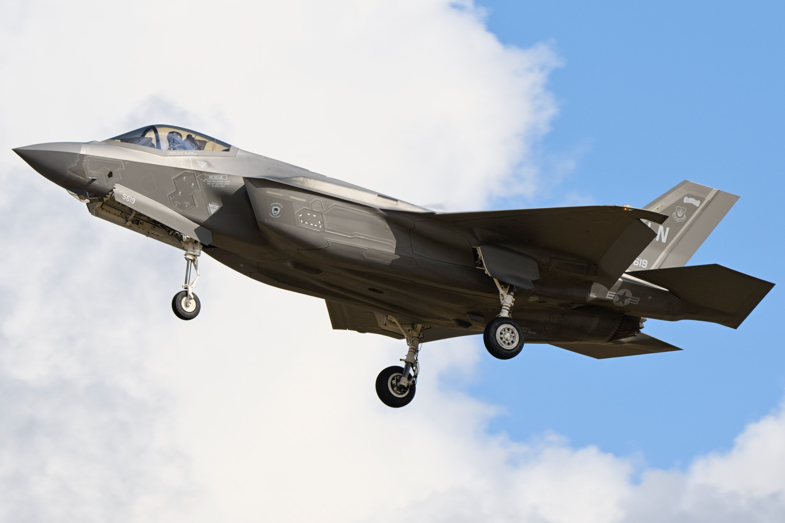

Quality-screened uploads
Share military aviation photographs for a human screening process, with clear acceptance decisions, reasons and an appeals route.
PHOTOGRAPHY FIRSTA free, worldwide database and community built around military aviation photography. Discover airframes and their histories, share your best work, and explore images screened for photographic quality.

A place where great aviation photographs connect to the aircraft, operators and stories behind them.
Share military aviation photographs for a human screening process, with clear acceptance decisions, reasons and an appeals route.
PHOTOGRAPHY FIRSTFind photographs by aircraft type, serial, operator and location, linked to individual airframe histories where records are available.
A SEARCHABLE DATABASEBuild a photographer profile, browse personal collections and celebrate first-airframe uploads and community photography awards.
A GLOBAL COMMUNITYSupport for EXIF information and planned AI-assisted metadata suggestions, with photographer control and human verification.
ASSISTIVE, NOT AUTOMATIC CLAIMSThe planned database is global from day one — no region-limited aircraft or location lists. Search the records, explore photos, and connect registrations and serials to their photographic histories.
It's designed for the photographer who cares about the aircraft as much as the photograph.
 ILLUSTRATIVE PHOTO · NOT A LIVE DATABASE RESULT
ILLUSTRATIVE PHOTO · NOT A LIVE DATABASE RESULTFeatures listed here are part of the planned platform, not currently available services.
Planned submission format: 1280px JPEG, up to 750 KB, with a JetPhotos-style screening process, explanations and appeals. Details may evolve before launch.
Browse operators, types, airfields and airframes from around the world, with searchable photo IDs and aircraft records.
Discover photographers, organise collections, recognise first-airframe photographs and celebrate standout images with community awards.
AeroShots is currently in development. Public submissions and launch dates will only be announced once the platform and screening tools are tested.
Free to use. Built for aviation photographers. Coming when it's ready.
Back to AeroStudios